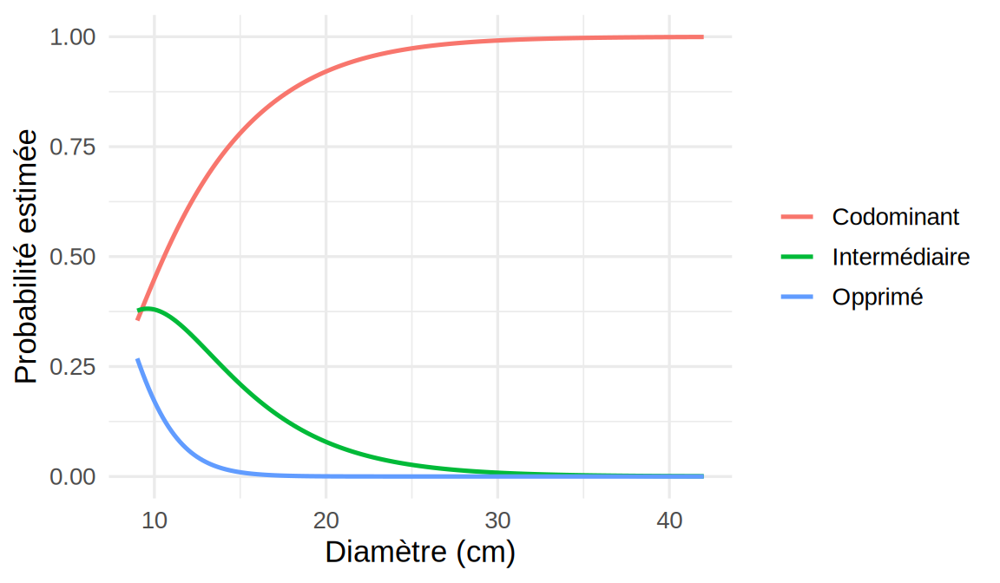

library(ggplot2)
library(MASS)
library(pscl)
library(ordinal)
library(dplyr)4 Extensions des GLM : réponses catégorielles et excès de zéros
Ce chapitre utilise les librairies R suivantes.
Les GLM du Chapitre 3 couvrent les réponses binaires, binomiales et de comptage. Ce chapitre traite trois situations courantes qui sortent de ce cadre, tout en réutilisant ses outils (vraisemblance, score, déviance, tests du rapport de vraisemblance). D’abord, la réponse peut prendre plus de deux catégories sans ordre naturel, ce qui mène à la régression multinomiale. Ensuite, ces catégories peuvent être ordonnées, et le modèle à cotes proportionnelles en tient compte avec beaucoup moins de paramètres. Enfin, des données de comptage peuvent contenir plus de zéros que ne le prévoit la loi de Poisson, et les modèles à zéros excédentaires et à barrière séparent ces zéros du reste des comptes.
4.1 Réponses nominales : régression multinomiale
4.1.1 Modèle
Supposons que la réponse \(Y_i\) prend une valeur parmi \(K\) catégories \(\{1,\ldots,K\}\), sans ordre naturel : un mode de transport, une espèce, un parti politique. Notons \(\pi_{ik} = P(Y_i = k\mid\boldsymbol X_i)\), avec \(\sum_{k=1}^K\pi_{ik} = 1\), et \(y_{ik} = \mathbf 1\{Y_i = k\}\) l’indicatrice de la catégorie observée.
Définition — Régression logistique multinomiale
On choisit une catégorie de référence, disons la première, et on pose, pour \(k = 2,\ldots,K\), \[ \log\frac{\pi_{ik}}{\pi_{i1}} = \boldsymbol X_i^\top\boldsymbol\beta_k, \] où \(\boldsymbol\beta_k\) est un vecteur de \(p+1\) coefficients propre à la catégorie \(k\). En posant \(\boldsymbol\beta_1 = \boldsymbol 0\), on obtient \[ \pi_{ik} = \frac{\exp(\boldsymbol X_i^\top\boldsymbol\beta_k)}{\sum_{l=1}^K\exp(\boldsymbol X_i^\top\boldsymbol\beta_l)}, \qquad k = 1,\ldots,K. \] Le modèle compte \((K-1)(p+1)\) paramètres.
Avec \(K = 2\), on retrouve exactement la régression logistique du Chapitre 2, avec la catégorie 2 comme « succès ». Le choix de la catégorie de référence ne change ni les probabilités ajustées ni la vraisemblance. Il change seulement les coefficients rapportés, puisque pour deux catégories quelconques \(k\) et \(l\), \[ \log\frac{\pi_{ik}}{\pi_{il}} = \boldsymbol X_i^\top(\boldsymbol\beta_k - \boldsymbol\beta_l). \]
Propriété — Interprétation des coefficients
Si \(x_j\) augmente d’une unité, les autres variables restant fixes, le rapport \(\pi_{ik}/\pi_{i1}\) est multiplié par \(e^{\beta_{kj}}\). On parle d’un rapport de cotes relatif à la catégorie de référence. Il ne faut pas voir \(\beta_{kj}>0\) comme une hausse de \(\pi_{ik}\) : la probabilité de la catégorie \(k\) peut diminuer si celle d’une troisième catégorie augmente encore plus vite. Pour décrire l’effet d’une variable sur les probabilités elles-mêmes, on trace plutôt les \(\hat\pi_{ik}\) en fonction de \(x_j\).
4.1.2 Estimation
Les observations étant indépendantes, la log-vraisemblance est celle d’une loi multinomiale à un essai : \[
\ell(\boldsymbol\beta_2,\ldots,\boldsymbol\beta_K) = \sum_{i=1}^n\sum_{k=1}^K y_{ik}\log\pi_{ik}.
\] Le score par rapport à \(\boldsymbol\beta_k\) a la même forme qu’en régression logistique, \[
\frac{\partial\ell}{\partial\boldsymbol\beta_k} = \sum_{i=1}^n(y_{ik}-\pi_{ik})\boldsymbol X_i, \qquad k = 2,\ldots,K,
\] et on le résout numériquement par Newton-Raphson ou par un algorithme de quasi-Newton. Les erreurs-types, les tests de Wald et les tests du rapport de vraisemblance s’obtiennent comme pour un GLM. En R, la fonction multinom de la librairie nnet ajuste ce modèle. Attention : mgcv contient aussi une fonction multinom, qui n’a rien à voir, de sorte qu’il vaut mieux écrire nnet::multinom lorsque les deux librairies sont chargées.
Remarque — Indépendance des alternatives non pertinentes
Le rapport \(\pi_{ik}/\pi_{il}\) ne dépend que de \(\boldsymbol\beta_k\) et de \(\boldsymbol\beta_l\), et pas des autres catégories. Ajouter ou retirer une catégorie ne change donc pas les cotes relatives des autres. Cette propriété, appelée indépendance des alternatives non pertinentes, est parfois irréaliste. L’exemple classique est celui d’un choix entre l’auto et un autobus bleu : si on ajoute un autobus rouge identique au bleu, il devrait prendre ses clients surtout à l’autobus bleu, alors que le modèle multinomial le fait prendre aux deux modes en proportion de leurs probabilités. Quand cette hypothèse est douteuse, on utilise des modèles qui la relâchent (logit emboîté, probit multinomial), qui dépassent le cadre de ce livre.
Exemple — Strate du couvert sur arbres
Au Chapitre 7 et au Chapitre 9, la strate du couvert a été réduite à deux catégories (strate inférieure ou non). Le jeu de données en distingue en fait quatre, dont seulement quatre arbres dominants, qu’on regroupe avec les codominants. Il reste trois catégories : codominant (l’arbre reçoit la lumière directement), intermédiaire et opprimé (l’arbre pousse entièrement sous le couvert des autres). On prend la strate codominante, la plus fréquente, comme référence, et on modélise la strate en fonction du diamètre.
arbres <- read.csv("Jeux de données/arbres.csv") |>
mutate(
espece = factor(species_fr),
strate = factor(if_else(canopy_stratum == "Dominant", "Codominant", canopy_stratum),
levels = c("Codominant", "Intermédiaire", "Opprimé"))
)
count(arbres, strate) strate n
1 Codominant 139
2 Intermédiaire 48
3 Opprimé 13La fonction multinom prend comme référence le premier niveau du facteur réponse. C’est pourquoi l’argument levels place « Codominant » en premier : les deux lignes de coef(mod.multi) correspondent alors, dans l’ordre, aux comparaisons « intermédiaire contre codominant » et « opprimé contre codominant ». Sans cet argument, factor classerait les niveaux par ordre alphabétique, et la référence changerait avec les noms des catégories.
mod.multi <- nnet::multinom(strate ~ diameter_cm, data = arbres, trace = FALSE)
summary(mod.multi)Call:
nnet::multinom(formula = strate ~ diameter_cm, data = arbres,
trace = FALSE)
Coefficients:
(Intercept) diameter_cm
Intermédiaire 2.123572 -0.2291611
Opprimé 5.902037 -0.6867160
Std. Errors:
(Intercept) diameter_cm
Intermédiaire 0.7419523 0.05680835
Opprimé 2.4002965 0.22387031
Residual Deviance: 260.6292
AIC: 268.6292 # rapports de cotes pour 5 cm de diamètre de plus
exp(5 * coef(mod.multi)[, "diameter_cm"])Intermédiaire Opprimé
0.3179677 0.0322712 Les deux pentes sont négatives : plus un arbre est gros, moins il a de chances d’être sous le couvert plutôt que codominant. Pour 5 cm de diamètre de plus, la cote « intermédiaire contre codominant » est multipliée par \(e^{5\times(-0{,}229)}\approx 0{,}32\), et la cote « opprimé contre codominant » par environ \(0{,}03\). L’effet est donc plus marqué pour la strate opprimée, ce qui est cohérent avec l’ordre naturel des strates, même si le modèle multinomial l’ignore. Le test du rapport de vraisemblance de l’effet du diamètre compare ce modèle au modèle sans variable explicative. Sa statistique vaut 48,6, à comparer à une \(\chi^2_2\) (deux coefficients nuls sous \(H_0\)), d’où une valeur-p négligeable.
grille <- data.frame(diameter_cm = seq(9, 42, length.out = 200))
probas <- predict(mod.multi, newdata = grille, type = "probs")
courbes <- data.frame(diameter_cm = rep(grille$diameter_cm, 3),
strate = factor(rep(colnames(probas), each = nrow(grille)),
levels = levels(arbres$strate)),
pi = as.vector(probas))
ggplot(courbes, aes(diameter_cm, pi, colour = strate)) +
geom_line(linewidth = 0.9) +
labs(x = "Diamètre (cm)", y = "Probabilité estimée", colour = NULL) +
theme_minimal(base_size = 13)
La probabilité d’être codominant passe d’environ 0,35 pour les plus petits arbres à presque 1 au-delà de 25 cm. La probabilité d’être opprimé n’est appréciable que sous 12 cm environ.
La librairie marginaleffects (voir le Chapitre 2) résume ces courbes en un effet moyen par catégorie, avec un intervalle de confiance :
marginaleffects::avg_comparisons(mod.multi, variables = list(diameter_cm = 5)) |>
as.data.frame() |>
dplyr::select(group, estimate, conf.low, conf.high) group estimate conf.low conf.high
1 Codominant 0.18750682 0.1349418 0.24007186
2 Intermédiaire -0.12604787 -0.1773965 -0.07469923
3 Opprimé -0.06145895 -0.0927305 -0.03018741Pour 5 cm de diamètre de plus, la probabilité d’être codominant augmente en moyenne d’environ 19 points de pourcentage. Les trois variations somment à 0, puisque les probabilités somment à 1.
Remarque — Pourquoi ne pas ajouter l’espèce?
Aucun bouleau à papier de l’échantillon n’est opprimé. Dans un modèle multinomial avec l’espèce, le logit « opprimé contre codominant » du bouleau tend alors vers \(-\infty\) : c’est la séparation du Chapitre 2, appliquée à une seule des \(K-1\) équations. Avec 13 arbres opprimés seulement, les \(2\times 3 = 6\) coefficients d’espèce supplémentaires sont de toute façon mal estimés. Le modèle ordinal de la section suivante règle ce problème en mettant les catégories en commun.
4.2 Réponses ordinales : modèle à cotes proportionnelles
Lorsque les catégories sont ordonnées (opprimé \(<\) intermédiaire \(<\) codominant, faible \(<\) moyen \(<\) élevé, stades d’une maladie), le modèle multinomial gaspille de l’information : il traite les catégories comme interchangeables et estime \((K-1)(p+1)\) paramètres. Le modèle à cotes proportionnelles exploite l’ordre.
4.2.1 Modèle
Définition — Modèle à cotes proportionnelles
Pour une réponse ordinale \(Y_i\in\{1,\ldots,K\}\), on modélise les probabilités cumulées : \[ \mathrm{logit}\,P(Y_i\leq k\mid\boldsymbol x_i) = \alpha_k - \boldsymbol x_i^\top\boldsymbol\beta, \qquad k = 1,\ldots,K-1, \] avec des seuils \(\alpha_1<\alpha_2<\cdots<\alpha_{K-1}\) et un vecteur \(\boldsymbol\beta\) commun à tous les seuils. Le vecteur \(\boldsymbol x_i\) ne contient pas de 1, puisque les seuils jouent le rôle des ordonnées à l’origine. Le modèle compte \(K-1+p\) paramètres. Les probabilités de chaque catégorie s’obtiennent par différence : \[ \pi_{ik} = P(Y_i\leq k\mid\boldsymbol x_i) - P(Y_i\leq k-1\mid\boldsymbol x_i), \] avec \(P(Y_i\leq 0) = 0\) et \(P(Y_i\leq K) = 1\).
Le signe de \(\boldsymbol x_i^\top\boldsymbol\beta\) suit la convention de la fonction polr de MASS : un coefficient positif fait monter la réponse vers les catégories supérieures. Certains logiciels écrivent \(\alpha_k + \boldsymbol x_i^\top\boldsymbol\beta\), ce qui change le signe des coefficients rapportés, et il faut vérifier la convention avant d’interpréter.
Propriété — Cotes proportionnelles
Pour tout seuil \(k\), la cote de \(\{Y_i>k\}\) contre \(\{Y_i\leq k\}\) vaut \(\exp(\boldsymbol x_i^\top\boldsymbol\beta - \alpha_k)\). Si \(x_j\) augmente d’une unité, cette cote est multipliée par \(e^{\beta_j}\), quel que soit le seuil. Les courbes des logits cumulés en fonction de \(x_j\) sont donc parallèles, et c’est ce qui donne son nom au modèle.
Propriété — Interprétation par une variable latente
Supposons qu’une variable continue non observée \(Y_i^* = \boldsymbol x_i^\top\boldsymbol\beta + \epsilon_i\), où \(\epsilon_i\) suit la loi logistique standard, détermine la catégorie observée : \(Y_i = k\) si \(\alpha_{k-1}<Y_i^*\leq\alpha_k\), avec \(\alpha_0 = -\infty\) et \(\alpha_K = +\infty\). Alors \[
P(Y_i\leq k) = P(Y_i^*\leq\alpha_k) = P(\epsilon_i\leq\alpha_k - \boldsymbol x_i^\top\boldsymbol\beta) = \frac{e^{\alpha_k-\boldsymbol x_i^\top\boldsymbol\beta}}{1+e^{\alpha_k-\boldsymbol x_i^\top\boldsymbol\beta}},
\] ce qui est exactement le modèle à cotes proportionnelles. Avec une erreur normale plutôt que logistique, on obtient le modèle probit ordinal (polr(..., method = "probit")).
Cette interprétation est souvent la plus naturelle. La position dans le couvert, par exemple, résulte d’une compétition continue pour la lumière, que l’inventaire forestier découpe en trois classes.
4.2.2 Estimation et vérification de l’hypothèse
Les paramètres \((\alpha_1,\ldots,\alpha_{K-1},\boldsymbol\beta)\) sont estimés par maximum de vraisemblance, avec la log-vraisemblance \(\sum_i\sum_k y_{ik}\log\pi_{ik}\) comme pour le modèle multinomial. En R, on utilise polr de MASS (avec Hess = TRUE pour obtenir les erreurs-types) ou clm de la librairie ordinal.
L’hypothèse de cotes proportionnelles se vérifie en la relâchant pour une variable à la fois : le modèle à cotes non proportionnelles remplace \(\beta_j\) par \(\beta_{jk}\), propre à chaque seuil. Les deux modèles sont emboîtés et se comparent par un test du rapport de vraisemblance à \(K-2\) degrés de liberté (par variable). La fonction clm le permet avec l’argument nominal. On peut aussi comparer le modèle à cotes proportionnelles au modèle multinomial par l’AIC, mais pas par un test du rapport de vraisemblance, parce que ces deux modèles ne sont pas emboîtés.
Exemple — Strate du couvert, modèle ordinal
La fonction polr exige un facteur ordonné, de la catégorie inférieure à la catégorie supérieure. L’ordre des niveaux fixe le sens des coefficients : avec « Opprimé » en premier et « Codominant » en dernier, un coefficient positif fait monter l’arbre vers la strate codominante. Inverser l’ordre changerait le signe de tous les coefficients.
arbres <- arbres |>
mutate(strate.ord = factor(strate, levels = c("Opprimé", "Intermédiaire", "Codominant"),
ordered = TRUE))
mod.ord1 <- polr(strate.ord ~ diameter_cm, data = arbres, Hess = TRUE)
summary(mod.ord1)Call:
polr(formula = strate.ord ~ diameter_cm, data = arbres, Hess = TRUE)
Coefficients:
Value Std. Error t value
diameter_cm 0.2832 0.0588 4.817
Intercepts:
Value Std. Error t value
Opprimé|Intermédiaire 0.9604 0.7491 1.2821
Intermédiaire|Codominant 3.0270 0.7482 4.0459
Residual Deviance: 264.2776
AIC: 270.2776 c(multinomial = AIC(mod.multi), ordinal = AIC(mod.ord1))multinomial ordinal
268.6292 270.2776 Le coefficient du diamètre est positif : un arbre plus gros tend vers les strates supérieures. Pour 5 cm de plus, la cote d’être dans une strate supérieure à \(k\) plutôt que dans une strate inférieure ou égale à \(k\) est multipliée par \(e^{5\times 0{,}283}\approx 4{,}1\), pour \(k\) = opprimé comme pour \(k\) = intermédiaire. Le modèle n’utilise que 3 paramètres, contre 4 pour le modèle multinomial, et les deux ont un AIC semblable. Le test de l’hypothèse de cotes proportionnelles (clm avec nominal = ~ diam.c, où diam.c est le diamètre centré, ce qui évite des seuils qui se croisent hors du domaine des données) donne une valeur-p de 0,09, de sorte que les données ne la contredisent pas nettement.
Le modèle ordinal permet maintenant d’ajouter l’espèce sans difficulté, parce que ses coefficients sont communs aux deux seuils :
mod.ord2 <- polr(strate.ord ~ diameter_cm + espece, data = arbres, Hess = TRUE)
round(summary(mod.ord2)$coefficients, 3) Value Std. Error t value
diameter_cm 0.293 0.061 4.784
especeÉpinette noire -0.757 0.488 -1.551
especeÉrable rouge -0.195 0.516 -0.378
especeSapin baumier -0.951 0.472 -2.013
Opprimé|Intermédiaire 0.512 0.831 0.617
Intermédiaire|Codominant 2.640 0.830 3.182exp(coef(mod.ord2)) diameter_cm especeÉpinette noire especeÉrable rouge
1.3408536 0.4692671 0.8227925
especeSapin baumier
0.3862823 Le facteur espece a pour référence son premier niveau, le bouleau à papier (premier dans l’ordre alphabétique), de sorte que chaque coefficient d’espèce compare cette espèce au bouleau. À diamètre égal, l’épinette noire et le sapin baumier tendent vers les strates inférieures par rapport au bouleau à papier (rapports de cotes inférieurs à 1). On retrouve, avec une réponse à trois catégories, l’ordre des espèces du GAM logistique du Chapitre 9. Le fait qu’aucun bouleau ne soit opprimé ne pose plus de problème : l’information sur le bouleau vient surtout du seuil entre intermédiaire et codominant.
4.3 Comptes avec excès de zéros
Dans plusieurs applications de comptage, une partie des observations ne peut pas produire d’événement. Une personne qui ne fume pas déclare zéro cigarette quoi qu’il arrive, et un site où l’espèce est absente donne un compte nul peu importe l’effort d’échantillonnage. Ces zéros s’ajoutent à ceux que produit la loi de Poisson par hasard, de sorte que les données contiennent plus de zéros que prévu.
4.3.1 Modèles à zéros excédentaires
Définition — Modèle de Poisson à zéros excédentaires (ZIP)
Avec probabilité \(\pi_i\), l’observation \(i\) est un zéro structurel. Avec probabilité \(1-\pi_i\), elle suit une loi de Poisson d’espérance \(\mu_i\). Ainsi, \[ P(Y_i = 0) = \pi_i + (1-\pi_i)e^{-\mu_i}, \qquad P(Y_i = y) = (1-\pi_i)\frac{e^{-\mu_i}\mu_i^y}{y!},\quad y = 1,2,\ldots \] Les deux composantes ont chacune leur prédicteur linéaire : \[ \mathrm{logit}(\pi_i) = \boldsymbol z_i^\top\boldsymbol\gamma, \qquad \log\mu_i = \boldsymbol x_i^\top\boldsymbol\beta. \] Le modèle binomial négatif à zéros excédentaires (ZINB) remplace la loi de Poisson par la loi binomiale négative du Chapitre 3.
Propriété — Moments du modèle ZIP
\[ E[Y_i] = (1-\pi_i)\mu_i, \qquad Var[Y_i] = (1-\pi_i)\mu_i(1+\pi_i\mu_i). \] Dès que \(\pi_i>0\), la variance dépasse l’espérance : les zéros excédentaires créent à eux seuls de la surdispersion.
Cette propriété a une conséquence pratique importante. Surdispersion et excès de zéros vont souvent ensemble, et un modèle binomial négatif ordinaire, qui prévoit lui aussi plus de zéros que la loi de Poisson, suffit parfois à reproduire les zéros observés. Il ne faut donc pas conclure à des zéros structurels sur la seule base du nombre de zéros comparé à la loi de Poisson.
4.3.2 Modèles à barrière
Définition — Modèle à barrière (hurdle)
Un premier modèle binaire décide si \(Y_i\) franchit la barrière du zéro, et un second modèle, tronqué en zéro, décrit les comptes positifs : \[ P(Y_i = 0) = 1-p_i, \qquad P(Y_i = y) = p_i\,\frac{f(y;\mu_i)}{1-f(0;\mu_i)},\quad y = 1,2,\ldots, \] où \(\mathrm{logit}(p_i) = \boldsymbol z_i^\top\boldsymbol\gamma\) et \(f(\cdot;\mu_i)\) est une loi de Poisson ou binomiale négative d’espérance \(\mu_i\) avant troncature, avec \(\log\mu_i = \boldsymbol x_i^\top\boldsymbol\beta\).
Les deux modèles diffèrent par la nature des zéros. Dans un modèle à zéros excédentaires, un zéro peut être structurel ou provenir de la loi de comptage. Dans un modèle à barrière, tous les zéros viennent de la partie binaire, et les comptes positifs sont décrits séparément. Comme la vraisemblance du modèle à barrière se factorise en une partie binaire et une partie tronquée, les deux parties s’estiment séparément. En particulier, si la partie binaire contient une ordonnée à l’origine, le modèle reproduit exactement le nombre de zéros observés (voir les exercices).
En R, les fonctions zeroinfl et hurdle de la librairie pscl ajustent ces modèles. La formule y ~ x1 + x2 | z1 utilise x1 et x2 dans la partie de comptage et z1 dans la partie binaire ; y ~ . utilise toutes les variables dans les deux parties. L’argument dist choisit la loi de comptage ("poisson" ou "negbin").
Exemple — Publications des doctorants en biochimie
Le jeu de données bioChemists de la librairie pscl décrit 915 doctorants en biochimie aux États-Unis. La réponse art est le nombre d’articles publiés pendant les trois dernières années du doctorat. Les variables explicatives sont le sexe (fem), l’état civil (mar), le nombre d’enfants de moins de 6 ans (kid5), le prestige du programme (phd) et le nombre d’articles du directeur de recherche pendant la même période (ment).
data(bioChemists, package = "pscl")
table(bioChemists$art)
0 1 2 3 4 5 6 7 8 9 10 11 12 16 19
275 246 178 84 67 27 17 12 1 2 1 1 2 1 1 c(moyenne = mean(bioChemists$art), variance = var(bioChemists$art)) moyenne variance
1.692896 3.709742 Près du tiers des doctorants n’ont rien publié, et la variance est plus de deux fois plus grande que la moyenne. On compare cinq modèles qui utilisent toutes les variables explicatives, en calculant pour chacun le nombre de zéros attendu, \(\sum_i\hat P(Y_i = 0)\).
m.pois <- glm(art ~ ., data = bioChemists, family = poisson)
m.nb <- glm.nb(art ~ ., data = bioChemists)
m.zip <- zeroinfl(art ~ . | ., data = bioChemists, dist = "poisson")
m.zinb <- zeroinfl(art ~ . | ., data = bioChemists, dist = "negbin")
m.hurdle <- hurdle(art ~ . | ., data = bioChemists, dist = "negbin")
zeros <- c(
Poisson = sum(dpois(0, fitted(m.pois))),
NB = sum(dnbinom(0, size = m.nb$theta, mu = fitted(m.nb))),
ZIP = sum(predict(m.zip, type = "prob")[, 1]),
ZINB = sum(predict(m.zinb, type = "prob")[, 1]),
Barriere.NB = sum(predict(m.hurdle, type = "prob")[, 1])
)
aic <- c(AIC(m.pois), AIC(m.nb), AIC(m.zip), AIC(m.zinb), AIC(m.hurdle))
round(rbind(zeros.attendus = zeros, AIC = aic), 1) Poisson NB ZIP ZINB Barriere.NB
zeros.attendus 191.4 277.8 273.2 285.4 275.0
AIC 3314.1 3135.9 3233.5 3126.0 3131.2Le modèle de Poisson prévoit environ 191 zéros, contre 275 observés. Le modèle ZIP corrige le nombre de zéros, mais son AIC reste très élevé, parce que la loi de Poisson sous-estime aussi la dispersion des comptes positifs. Le modèle binomial négatif ordinaire, lui, reproduit déjà presque exactement le nombre de zéros et améliore nettement l’AIC : l’essentiel de l’excès de zéros apparent est en fait de la surdispersion. Le modèle à barrière reproduit exactement les zéros observés, comme prévu. Le ZINB a le plus petit AIC, environ 10 points de moins que le modèle binomial négatif, pénalité des six paramètres supplémentaires comprise. Il y a donc des zéros structurels, mais leur rôle est secondaire : le modèle binomial négatif reproduisait déjà le nombre de zéros.
summary(m.zinb)
Call:
zeroinfl(formula = art ~ . | ., data = bioChemists, dist = "negbin")
Pearson residuals:
Min 1Q Median 3Q Max
-1.2942 -0.7601 -0.2909 0.4448 6.4155
Count model coefficients (negbin with log link):
Estimate Std. Error z value Pr(>|z|)
(Intercept) 0.4167465 0.1435966 2.902 0.00371 **
femWomen -0.1955068 0.0755926 -2.586 0.00970 **
marMarried 0.0975826 0.0844520 1.155 0.24789
kid5 -0.1517325 0.0542061 -2.799 0.00512 **
phd -0.0007001 0.0362697 -0.019 0.98460
ment 0.0247862 0.0034927 7.097 1.28e-12 ***
Log(theta) 0.9763565 0.1354695 7.207 5.71e-13 ***
Zero-inflation model coefficients (binomial with logit link):
Estimate Std. Error z value Pr(>|z|)
(Intercept) -0.19169 1.32282 -0.145 0.88478
femWomen 0.63593 0.84892 0.749 0.45379
marMarried -1.49947 0.93867 -1.597 0.11017
kid5 0.62843 0.44278 1.419 0.15582
phd -0.03771 0.30801 -0.122 0.90254
ment -0.88229 0.31623 -2.790 0.00527 **
---
Signif. codes: 0 '***' 0.001 '**' 0.01 '*' 0.05 '.' 0.1 ' ' 1
Theta = 2.6548
Number of iterations in BFGS optimization: 43
Log-likelihood: -1550 on 13 DfLes deux parties du ZINB s’interprètent séparément. Dans la partie de comptage, chaque article supplémentaire du directeur multiplie le nombre attendu d’articles du doctorant (parmi ceux qui ne sont pas des zéros structurels) par \(e^{0{,}0248}\approx 1{,}025\), et le fait d’être une femme le multiplie par environ \(0{,}82\). Dans la partie binaire, seul le nombre d’articles du directeur est significatif : chaque article du directeur multiplie par \(e^{-0{,}88}\approx0{,}41\) la cote d’être un zéro structurel, c’est-à-dire un doctorant qui ne publie pas du tout. Un directeur très actif réduit donc la probabilité de ne rien publier et augmente le nombre d’articles de ceux qui publient.
Remarque — Comment choisir?
Les modèles de Poisson, binomial négatif, ZIP, ZINB et à barrière ne sont pas tous emboîtés : le modèle de Poisson est un cas limite des modèles binomial négatif et à zéros excédentaires, mais les modèles à zéros excédentaires et à barrière ne sont pas emboîtés entre eux, et la valeur \(\pi_i = 0\) est à la frontière de l’espace des paramètres (comme pour le test de surdispersion). En pratique, on compare les modèles par l’AIC ou par validation croisée (Chapitre 5) et on examine la répartition des comptes prédits, pas seulement le nombre de zéros. Le choix entre zéros excédentaires et barrière relève surtout de l’interprétation : y a-t-il une sous-population qui ne peut pas produire d’événement (zéros excédentaires), ou un seul mécanisme qui décide d’abord de franchir le zéro (barrière)?
Remarque — À retenir
- Régression multinomiale : chaque catégorie autre que la référence a son vecteur \(\boldsymbol{\beta}_k\), soit \((K-1)(p+1)\) paramètres, et \(e^{\beta_{kj}}\) multiplie le rapport \(\pi_{ik}/\pi_{i1}\). Un \(\beta_{kj} > 0\) n’implique pas une hausse de \(\pi_{ik}\), d’où l’intérêt de tracer les \(\hat\pi_{ik}\) (ajustement avec
nnet::multinom, qui prend le premier niveau du facteur comme référence) ; - Cotes proportionnelles : \(\mathrm{logit}\,P(Y_i\leq k\mid\boldsymbol{x}_i) = \alpha_k - \boldsymbol{x}_i^\top\boldsymbol{\beta}\), avec un \(\boldsymbol{\beta}\) commun à tous les seuils (\(K-1+p\) paramètres), de sorte que \(e^{\beta_j}\) multiplie la cote de \(\{Y_i > k\}\) quel que soit \(k\). Avec
polrdeMASS, l’ordre des niveaux du facteur ordonné fixe le signe des coefficients, et la convention de signe varie d’un logiciel à l’autre ; - Vérification et comparaison : l’hypothèse de cotes proportionnelles se teste en la relâchant pour une variable à la fois (
clmdeordinal, argumentnominal), par un test du rapport de vraisemblance à \(K-2\) degrés de liberté. Les modèles ordinal et multinomial ne sont pas emboîtés et se comparent par l’AIC ; - Zéros excédentaires ou barrière : dans un modèle ZIP, un zéro peut être structurel ou venir de la loi de Poisson, alors que dans un modèle à barrière, tous les zéros viennent de la partie binaire. En R,
zeroinflethurdledepscl, avec une formuley ~ x1 + x2 | z1(partie de comptage, puis partie binaire) et l’argumentdist; - Piège : les zéros excédentaires créent à eux seuls de la surdispersion, et un modèle binomial négatif ordinaire suffit parfois à reproduire les zéros observés. Ne concluez donc pas à des zéros structurels sur la seule base du nombre de zéros comparé à la loi de Poisson, et comparez plutôt les modèles par l’AIC ou par validation croisée.
4.4 Exercices
Les exercices sont classés par niveau de difficulté. Leurs solutions sont regroupées dans l’annexe Solutions des exercices ; le lien « Voir la solution » sous chaque énoncé y mène directement.
4.4.1 Niveau facile
Exercice 1. Considérez la régression multinomiale avec \(K\) catégories et la catégorie 1 comme référence.
Montrez que, pour \(K = 2\), le modèle est exactement la régression logistique de \(\mathbf 1\{Y_i = 2\}\).
On change de catégorie de référence et on prend la catégorie \(l\). Exprimez les nouveaux coefficients \(\boldsymbol\beta_k^{(l)}\) en fonction des \(\boldsymbol\beta_k\) de départ. Les probabilités ajustées changent-elles?
Exercice 2. Un compte suit un modèle ZIP avec \(\pi = 0{,}2\) et \(\mu = 2\).
Calculez \(P(Y = 0)\) et \(E[Y]\).
Calculez la probabilité d’un zéro sous une loi de Poisson de même espérance. Commentez.
Exercice 3. Un modèle à cotes proportionnelles pour une réponse à trois catégories (1 < 2 < 3) a pour seuils \(\alpha_1 = 1\) et \(\alpha_2 = 3\) et pour coefficient \(\beta = 0{,}3\) d’une variable \(x\).
Calculez les probabilités des trois catégories pour \(x = 10\) et pour \(x = 20\).
Vérifiez que la cote de \(\{Y > k\}\) contre \(\{Y\leq k\}\) est multipliée par le même facteur entre \(x = 10\) et \(x = 20\), que \(k\) vaille 1 ou 2.
4.4.2 Niveau moyen
Exercice 1. Pour la régression multinomiale, la log-vraisemblance s’écrit \(\ell = \sum_i\sum_k y_{ik}\log\pi_{ik}\), avec \(\sum_k y_{ik} = 1\).
Montrez que \(\ell = \sum_i\left\{\sum_{k=2}^K y_{ik}\boldsymbol X_i^\top\boldsymbol\beta_k - \log\left(1+\sum_{l=2}^K e^{\boldsymbol X_i^\top\boldsymbol\beta_l}\right)\right\}\).
Déduisez-en le score \(\partial\ell/\partial\boldsymbol\beta_k = \sum_i(y_{ik}-\pi_{ik})\boldsymbol X_i\). Faites le lien avec le score de la régression logistique.
Montrez que, si le modèle contient une ordonnée à l’origine, le nombre prédit d’observations dans chaque catégorie, \(\sum_i\hat\pi_{ik}\), est égal au nombre observé.
Exercice 2. Démontrez les moments du modèle ZIP donnés au Chapitre 4 : \[ E[Y] = (1-\pi)\mu, \qquad Var[Y] = (1-\pi)\mu(1+\pi\mu). \] (Indice : écrivez \(Y = (1-S)\,W\), où \(S\sim\mathrm{Bernoulli}(\pi)\) est indépendant de \(W\sim\mathcal P(\mu)\).) Montrez ensuite que le rapport \(Var[Y]/E[Y]\) dépasse 1 dès que \(\pi>0\).
Exercice 3. Considérez le modèle à barrière, avec \(P(Y_i = 0) = 1-p_i\) et \(P(Y_i = y) = p_i\,f(y;\mu_i)/\{1-f(0;\mu_i)\}\) pour \(y\geq 1\), où \(\mathrm{logit}(p_i) = \boldsymbol z_i^\top\boldsymbol\gamma\) et \(\log\mu_i = \boldsymbol x_i^\top\boldsymbol\beta\).
Montrez que la log-vraisemblance se sépare en une partie qui ne dépend que de \(\boldsymbol\gamma\) et une partie qui ne dépend que de \(\boldsymbol\beta\). Identifiez chacune.
Déduisez-en que, si \(\boldsymbol z_i\) contient une ordonnée à l’origine, le nombre de zéros prédit, \(\sum_i(1-\hat p_i)\), est exactement le nombre de zéros observé.
4.4.3 Niveau difficile
Exercice 1. On reprend l’interprétation par une variable latente du modèle à cotes proportionnelles : \(Y_i^* = \boldsymbol x_i^\top\boldsymbol\beta + \sigma\epsilon_i\), où \(\epsilon_i\) suit la loi logistique standard, et \(Y_i = k\) si \(\alpha_{k-1}<Y_i^*\leq\alpha_k\).
Montrez que \((\boldsymbol\beta,\alpha_1,\ldots,\alpha_{K-1},\sigma)\) et \((c\boldsymbol\beta,c\alpha_1,\ldots,c\alpha_{K-1},c\sigma)\) donnent la même loi pour \(Y_i\), quel que soit \(c>0\). Pourquoi peut-on fixer \(\sigma = 1\)?
Montrez de même qu’on ne peut pas inclure une ordonnée à l’origine dans \(\boldsymbol x_i\) en plus des seuils.
En régression multinomiale, le rapport \(\pi_{ik}/\pi_{il}\) ne dépend pas des autres catégories (indépendance des alternatives non pertinentes). Cette propriété vaut-elle pour le modèle à cotes proportionnelles? Justifiez à l’aide de \(\pi_{i1}/\pi_{i3}\) pour \(K = 3\).
Exercice 2 (appliqué). On vérifie numériquement la factorisation de l’exercice 3 du niveau moyen sur les données bioChemists.
Ajustez le modèle à barrière de Poisson
hurdle(art ~ ., data = bioChemists, dist = "poisson"). Ajustez ensuite la régression logistique deart > 0sur toutes les variables et comparez ses coefficients à ceux de la partie binaire.Écrivez la log-vraisemblance de la loi de Poisson tronquée en zéro pour les doctorants qui ont publié au moins un article, maximisez-la avec
optimet comparez les estimations à celles de la partie de comptage.Vérifiez que le nombre de zéros prédit est égal au nombre observé.
Références complémentaires
La page Références complémentaires décrit chacun de ces ouvrages.